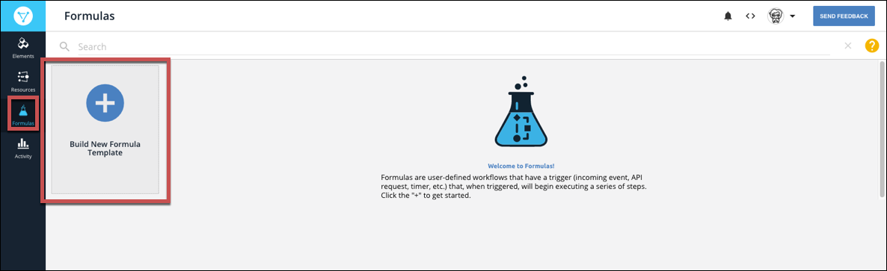
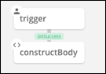
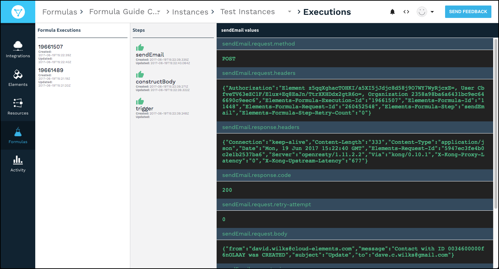
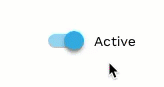

The docs are moving!
Find us at our new Help Center where we've combined our documentation and knowledgebase articles in one easy-to-search location.
We aren't updating the Developer Portal anymore, except for the Element Docs — all updates happen in the Help Center. We're retiring the Developer Portal as you know it in:
Formula Templates
Formula templates enable you to build a single template for a formula that you can reuse with different elements and values. After you build a formula template, you can then create a formula instance where you replace the formula variable with actual element instances and values. This approach helps you build efficient and reusable formulas.
Build a Formula Template
Formula templates include a trigger that kicks off the formula, steps that execute as a result of the trigger, and variables to represent input required to run an instance of the formula. You can build formulas that use triggers that kick off when something happens to an element instance, you can schedule triggers, or you can manually kick off a trigger. See Triggers, Steps, and Variables for more information about each component.
As you build a formula, you also build context consisting of triggers, variables, steps, and values created by steps. You can refer to that context in later steps in the formula. Consider each part as a building block that has a name and information that you can refer to. For example, in a formula that sends an email notification for a new contact, you build the body of the email in one step. In a later step when you actually send the message, refer to the step where you built the body.
To build a new formula template:
- Click Formulas, and then on the Formulas page, click Build New Formula Template. 
- Click Build New Formula.
Enter a name for your formula, and then click Create.
Cloud Elements provides you a list of triggers. For details about each trigger, see Triggers, Steps, and Variables.

Select your trigger.
- Choose Event for a formula triggered by an event configured on an element instance.
- Choose Element Request for a formula triggered when a specific request is made to an element instance.
- Choose Scheduled for a formula to occur at a specific time or regular interval.
- Chose Manual to trigger the formula with an API call to
POST /formulas/instances/:id/executions.
Note: If you need to change a trigger in a formula template, you can delete it and start over. Deleting a trigger also deletes all following steps, so do so with caution.Complete the trigger properties, which vary based on the selected trigger.
- For Event provide an Element Instance Variable.
- For Element Request provide an Element Instance Variable, an API method, and API endpoint.
- For Scheduled provide a Cron schedule.
- For Manual you do not need to provide any more properties.
Click Save.
Cloud Elements shows the first trigger node in the formula visualization.

Add any variables that you will need to run the formula instance.
- Click Variables.

Select the type of variable, and then enter a name.
Takes note of the Formula Step Variable Name, which is how you will refer to the variable throughout the formula.
Click Save.
- Click Variables.
Add your first step. In the formula visualization, click
 .
.Select the type of step that you want to add.
Complete the step properties, and then click Save. For details on each step, see Element Instance Variable.
Note: Click Add From Existing to find a step to copy.Cloud Elements shows the first trigger node and the step that you just created in the formula visualization. The path from the trigger to the step defaults to On Success, but you can add failure steps later. 
To add another step, click the step, and then select one of the following:
- Insert Above adds a new step prior to the current step with an On Success path connecting the two.
- Add On Success adds a step for the formula to continue to if the current step succeeds.
- Add On Failure adds a step for the formula to continue to if the current step fails.
Continue adding steps until you complete the formula template.
Add a description by clicking Edit. See Add a Description to a Formula Template.
After you complete the formula, test it.
Test Formula Templates
You can test a formula template as you build it. When you test a formula template, you can either use an existing formula instance or build a new formula instance.
To test a formula template:
- At the top of the formula visualization, click Setup Test.
- Click Select Instance.
- Either choose an existing formula instance (and skip down to the Select Trigger step) or click Add New Instance.
- Enter a name for the new formula instance.
- For each variable, click the variable and add an element instance or enter a value.
- Click Create Instance.
- Select the instance that you just built.
- Click Select Trigger.
- Provide trigger information, depending on the type of trigger.
Create Variables
You can create two types of variables: Element Instance variables — replaced by element instances in the formula instance — and Value variables — replaced by values entered in the formula instance. When you create a variable, note the Formula Step Variable Name which is how you refer to the variable in the formula context. See Formula Variables for more about variables in the formula context.
To create a formula variable:
- Open the formula template. On the Formulas page, hover over the Formula Card, and then click Open.
- Click Variables.
- Select the type of variable to create.
- Enter a name for the variable. You can include spaces, but we remove the spaces to create the Formula Step Variable Name (identified as
keyin the JSON), which is how you refer to the variable in the formula context. - Click Save.
Edit and Delete Variables
You can edit the name of a variable or remove a variable from a formula template.
To edit or delete a formula variable:
- Open the formula template. On the Formulas page, hover over the Formula Card, and then click Open.
- Click Variables.
- Click Edit Variable.
- Select the variable to edit or delete, and then:
- Edit the name, and then click Save. Or,
- Click Delete.
Review Executions
You can troubleshoot formulas by reviewing executions. The executions appear in three columns from left to right:
- Formula Executions — the list of executions of the selected formula template. We identify failed executions in red.
- Steps —The steps in the formula and an icon showing their success or failure .
- Execution Values —the request and response details associated with the selected step. 
To review executions
- Open the formula template. On the Formulas page, hover over the Formula Card, and then click Open.
- Click Executions.
- Click the execution to review.
- Click the step to review.
Copy a Formula Template
You can build a formula template based on an existing template or from a Cloud Elements sample formula, resulting in a copy of the template.
To build a copy of a formula template:
- Click Formulas, and then on the Formulas page, click Build New Formula.
- Click Build From Existing Formula.
- To use one of your existing formula templates, select the template.
- To use a Cloud Elements formula template, click CE Sample Formulas, and then select the formula.
- Enter a name for your formula, and then click Create.
Import and Export Formula Templates
You can export a formula template as a JSON file and import other templates from their JSON source file.
To import a formula template:
- Click Formulas, and then on the Formulas page, click Build New Formula.
- Click Import.
- Select the JSON file to import.
- Optionally rename the file, and then click Create.
To export a formula:
- Navigate to the Formulas page.
- Hover over the element card, and then click Export.
- Save the file.
Parallel Executions
To help formula instances execute as efficiently as possible, they take advantage of multithreaded executions. That is, multiple executions of the same formula instance can make requests at the same time. Some API providers prevent multiple requests from the same account at the same time. If this happens, you can change a formula template or an individual formula instance to execute one step at a time. This makes the formula less efficient and results in an increase in the execution time.
To change a formula from the default multithreaded execution to single threaded:
- Open the formula template. On the Formulas page, hover over the Formula Card, and then click Open.
- Click Edit.

- Click Show Advanced.
- Switch Single Threaded Execution on.
- Click Save.
Alternatively, in the formula template or formula instance JSON, update singleThreaded to true:
{
"singleThreaded": true
}
Rename a Formula Template
To rename a formula template:
- Open the formula template. On the Formulas page, hover over the Formula Card, and then click Open.
- Click Edit.
- Rename the formula template.
- Click Save.
Add a Description to a Formula Template
Descriptions provide more information about a formula template. Use the information to describe the formula template use case and anything another user might need when creating a formula instance.
To add a description to a formula template:
- Open the formula template. On the Formulas page, hover over the Formula Card, and then click Open.
- Click Edit.
- Describe the formula template in Description.
- Click Save.
Delete a Formula Template
You can delete a formula template if the template has no instances associated with it. If the formula template includes instances, delete those first.
To delete a formula template:
- Navigate to the Formulas page.
- Hover over the Formula Template card, and then click Delete.
- Confirm the deletion.
Deactivate a Formula Template
You can deactivate a formula template to prevent any executions of formula instances of the template.
To deactivate a formula:
- Open the formula template. From the Formulas page, hover over the Formula Template card, and then click Open.
- Click Edit.
- Switch the Active slider off. 
- Click Save.
Access Formula Information
Each formula template and formula instance exposes information about itself through the info object.
{
"info":{
"formulaId":"123",
"formulaName":"name",
"formulaInstanceId":"123",
"formulaInstanceName":"name",
"formulaExecutionId":"1234"
}
}
Formula information contributes to the formula context. You can access the information with info.property, such as info.formulaInstanceId or info.formulaName.